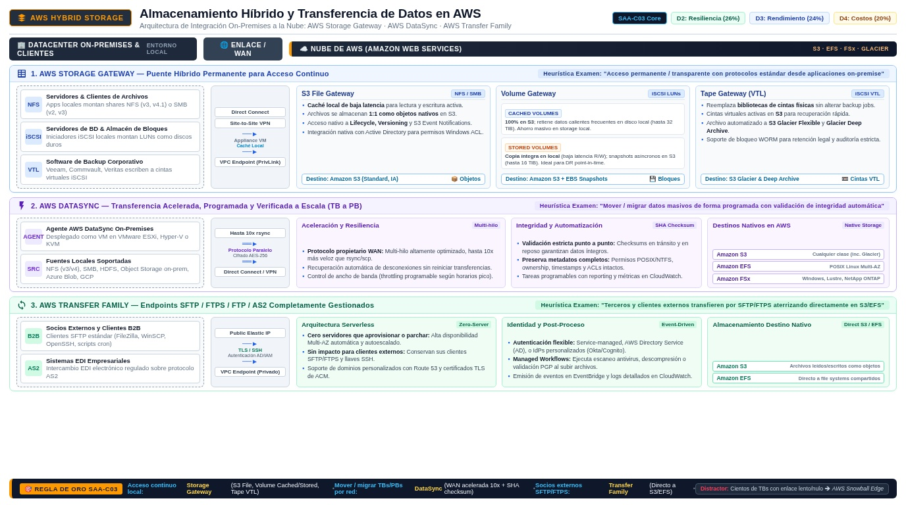

Storage Gateway, DataSync y Transfer Family AWS hybrid storage services
Los tres servicios de almacenamiento híbrido que el examen usa para preguntar lo mismo de tres maneras: ¿necesitas acceso continuo, mover datos o hablar un protocolo de terceros?
La mayoría de las empresas no nacen en AWS: tienen NAS, servidores de archivos y cintas on-premises, y durante años conviven con la nube. Esa coexistencia es el hybrid cloud, y AWS la resuelve con tres servicios de propósito distinto. AWS Storage Gateway da a las aplicaciones on-premises acceso transparente al almacenamiento en la nube: un appliance virtual local presenta archivos, volúmenes o cintas mientras persiste en S3 o FSx. AWS DataSync mueve datos entre sistemas — on-premises, AWS y hasta otras nubes — de forma acelerada y segura. AWS Transfer Family gestiona endpoints de SFTP, FTPS, FTP y AS2 para que terceros sigan transfiriendo archivos como siempre, solo que aterrizando en S3 o EFS.
El examen rara vez pregunta por consolas: presenta un escenario híbrido y espera que identifiques el servicio por la necesidad subyacente. La heurística es memorizar tres verbos: acceder de forma continua = Storage Gateway; mover o migrar datos = DataSync; recibir archivos de terceros por su protocolo = Transfer Family. Un cuarto actor que aparece como distractor es la familia Snow (Snowball) para migraciones masivas sin red; si el enunciado insinúa lentitud de enlace o datos de decenas de TB en un plazo corto, esa es la pista hacia Snow, no hacia DataSync.

Storage Gateway: el puente permanente
Storage Gateway conecta un software appliance que corres on-premises (en VMware, Hyper-V o hardware físico) con el almacenamiento de la nube, de forma que tus aplicaciones siguen usando protocolos estándar sin enterarse de que detrás está AWS. La documentación actual divide el servicio en cuatro tipos de gateway. El S3 File Gateway expone shares NFS/SMB cuyos archivos se guardan como objetos en S3 — perfecto para compartir archivos con versionado, lifecycle y eventos de S3. El FSx File Gateway presenta shares SMB respaldadas por un file system de FSx for Windows File Server en la nube, con caché local para baja latencia. El Volume Gateway ofrece volúmenes iSCSI como bloques: en modo cached el dato primario vive en S3 con una caché local de lectura rápida, y en modo stored el dato primario queda on-premises con backup asíncrono a S3 como snapshot. El Tape Gateway sustituye la biblioteca de cintas física por una virtual tape library sobre S3 y Glacier, manteniendo intacto tu software de backup.
| Tipo de gateway | Protocolo local | Backend en AWS | Caso de uso típico |
|---|---|---|---|
| S3 File Gateway | NFS y SMB | Bucket de S3 | Compartir archivos aprovechando lifecycle, versioning y eventos de S3 |
| FSx File Gateway | SMB | FSx for Windows File Server | Shares de Windows con baja latencia y datos en la nube |
| Volume Gateway — cached | iSCSI | S3 con caché local | Capacidad ilimitada on-premises con acceso rápido a lo frecuente |
| Volume Gateway — stored | iSCSI | Snapshots en S3 | Dato primario local con backups asíncronos off-site |
| Tape Gateway | iSCSI VTL | S3 y Glacier | Reemplazar la biblioteca de cintas sin tocar el software de backup |
DataSync: mover datos de forma acelerada y verificada
DataSync es un servicio de transferencia de alta velocidad y confiabilidad comprobable: usa un protocolo propio, multi-hilo y paralelo, cifrado en vuelo y validación de integridad punto a punto, de modo que los datos llegan "seguros, intactos y listos para usar", como resume la documentación oficial. Se apoya en un agente que despliegas junto al storage origen y en pares de locations que definen fuente y destino. Los orígenes on-premises incluyen NFS, SMB, HDFS y object storage genérico; los destinos en AWS cubren S3, EFS y toda la familia FSx (Windows, Lustre, OpenZFS, ONTAP); y también transfieres desde otras nubes como Azure Blob o Google Cloud Storage. Las transferencias pueden cruzar la internet pública o usar VPC endpoints para no salir de la red administrada, con IAM controlando el acceso.
Sus casos de uso oficiales son cuatro: migrar datasets activos a AWS, archivar datos fríos directamente a Glacier Flexible Retrieval o Deep Archive para liberar capacidad local y apagar sistemas heredados, replicar datos hacia una copia en espera en otra región o servicio, y mover datos puntualmente para procesarlos en la nube — pipelines de ML, video o analytics. La señal de examen más clara es "recurring/scheduled transfer between on-premises NFS and Amazon S3 with integrity validation": eso es DataSync, no un rsync artesanal ni un bucket con replication (que solo funciona entre buckets S3).
Transfer Family: SFTP gestionado para terceros
Muchos socios y clientes de enterprise solo saben hablar SFTP: tienen clientes instalados, reglas de firewall y flujos con décadas de antigüedad. AWS Transfer Family monta endpoints totalmente gestionados que hablan SFTP, FTPS, FTP y AS2 (más transferencias por navegador), y cuyos datos aterrizan directamente en Amazon S3 o Amazon EFS — no en un servidor intermedio que tú administres. El valor clave es que nada cambia para la contraparte: mantienen su cliente, su autenticación y sus reglas de acceso, mientras tú eliminas el servidor de archivos que parcheabas a mano. Cada endpoint es un server administrado al que autenticas usuarios de forma gestionada, y que escala con el tráfico sin dimensionamiento previo.
| Si el escenario dice… | Servicio correcto | Por qué |
|---|---|---|
| Las apps locales necesitan seguir leyendo y escribiendo archivos, con los datos en S3 | S3 File Gateway | Acceso continuo con protocolos estándar y caché local |
| El software de backup escribe a "cintas" y quieres salir del hardware físico | Tape Gateway | VTL compatible que archiva a S3/Glacier |
| "Migrate 20 TB of active data from on-premises NFS into EFS this weekend" | DataSync | Transferencia acelerada, cifrada y con validación de integridad |
| "Terceros suben archivos con sus clientes SFTP sin cambiar nada" | Transfer Family | Endpoint SFTP gestionado hacia S3/EFS |
| "Cientos de TB, enlace lento, plazo imposible" | Familia Snow | Migración offline por correo físico |
desde apps locales"| G["Storage Gateway
file, volume, tape"] Q -->|"Mover datos
una vez o recurrente"| D["DataSync"] Q -->|"Terceros con
SFTP o FTPS"| T["Transfer Family"] G -->|"más de 100 TB
sin red usable"| SN["Snowball o Snowmobile"] classDef navy fill:#EFF6FF,stroke:#3B82F6,stroke-width:2px,color:#1E293B classDef green fill:#F0FDF4,stroke:#10B981,stroke-width:2px,color:#1E293B classDef amber fill:#FFF7ED,stroke:#F59E0B,stroke-width:2px,color:#1E293B class Q,SN navy class G,D,T green
- Storage Gateway = acceso híbrido continuo: S3 File (NFS/SMB→S3), FSx File (SMB→FSx), Volume (iSCSI, cached/stored) y Tape (VTL→S3/Glacier).
- El appliance de gateway corre on-premises y presenta protocolos estándar a tus aplicaciones.
- DataSync = transferencia acelerada y verificada: agente + locations; orígenes NFS/SMB/HDFS/object, destinos S3/EFS/FSx.
- Casos de DataSync: migrar, archivar a Glacier, replicar y alimentar procesos en la nube.
- Transfer Family = SFTP/FTPS/FTP/AS2 gestionados hacia S3 y EFS, sin servidores que administrar.
- Snow cuando la red no da abasto o los volúmenes son masivos y el plazo corto.
- STG-14 AWS Storage Gateway — What is (hybrid: file, volume, tape gateways) · docs.aws.amazon.com/storagegateway/latest/userguide/WhatIsStorageGateway.html
- STG-15 AWS DataSync — What is (data transfer, migration, use cases) · docs.aws.amazon.com/datasync/latest/userguide/what-is-datasync.html
- STG-16 AWS Transfer Family — What is (SFTP, FTPS, FTP, AS2) · docs.aws.amazon.com/transfer/latest/userguide/what-is-aws-transfer-family.html